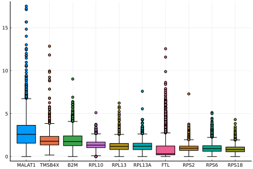
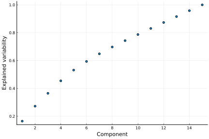

Preprocessing and clustering 3k PBMCs
This showcase reproduces Seurat's Guided Clustering Tutorial
Overview
Loading data
The data consists of 3k PBMCs from a Healthy Donor and is freely available from 10x Genomics.
You can either download the data manually
mkdir pbmc3k
wget http://cf.10xgenomics.com/samples/cell-exp/1.1.0/pbmc3k/pbmc3k_filtered_gene_bc_matrices.tar.gz -O pbmc3k/pbmc3k_filtered_gene_bc_matrices.tar.gz
cd pbmc3k; tar -xzf pbmc3k_filtered_gene_bc_matrices.tar.gz --strip-components 2The read_10X function reads the data from the cellranger 10X pipeline and returns a labelled count matrix. Each entry indicated the number of molecules detected for each feature/gene (columns) and each cell (rows).
using Severo
X = read_10X("pbmc3k/")The meaning of the rows and columns is different from the representation used by other packages like Seurat
Alternatively, the dataset function can be used to load a dataset from a predefined collection. For example, the PBMC collection is known by Cell.jl and can be easily loaded as follows:
using Severo
X = dataset("PBMC", "3k")
# The matrix can be indexed using names or indices. For instance,
# we can look at specific genes in the first thirty cells
#X[1:30, ["CD3D", "TCL1A", "MS4A1"]]2700×32738 Named sparse matrix with 2286884 Int32 nonzero entries:
[AGATTCCTGACGAG-1, "AL627309.1"] = 1
[CCAAAGTGCTACGA-1, "AL627309.1"] = 1
[CCGTACACGTTGGT-1, "AL627309.1"] = 1
[CGACTGCTTCCTCG-1, "AL627309.1"] = 1
[CTATGTTGTCTCGC-1, "AL627309.1"] = 1
[CTGTGAGACGAACT-1, "AL627309.1"] = 1
[GATACTCTATCGGT-1, "AL627309.1"] = 1
[GCTAGATGAGCTCA-1, "AL627309.1"] = 1
[GCTTAACTACTGGT-1, "AL627309.1"] = 1
⋮
[TCTCAAACCTAAGC-1, "SRSF10.1"] = 1
[TGAGACACTCAAGC-1, "SRSF10.1"] = 1
[TGATCGGATATGCG-1, "SRSF10.1"] = 1
[TGTAGGTGCTATGG-1, "SRSF10.1"] = 1
[TTATCCGAGAAAGT-1, "SRSF10.1"] = 1
[TTCAGTACCGACTA-1, "SRSF10.1"] = 1
[TTGAATGATCTCAT-1, "SRSF10.1"] = 1
[TTGAGGACTACGCA-1, "SRSF10.1"] = 1
[TTTATCCTGTTGTG-1, "SRSF10.1"] = 1
[TTTCCAGAGGTGAG-1, "SRSF10.1"] = 1The count data is stored in a sparse matrix format, only storing non-zero elements of the matrix. Any values not shown are zero.
Severo.read_data — Functionread_data(path::AbstractString; kw...)Tries to identify and read a count matrix in any of the supported formats
Arguments:
fname: pathkw: additional keyword arguments are passed on
Returns values:
Returns labeled sparse matrix containing the counts
Severo.read_10X — Functionread_10X(dirname::AbstractString; unique_features=true)Read count matrix from 10X genomics
Arguments:
dirname: path to directory containing matrix.mtx, genes.tsv (or features.tsv), and barcodes.tsv from 10Xunique_features: should feature names be made unique (default: true)
Returns values:
Returns labeled sparse matrix containing the counts
Missing docstring for dataset. Check Documenter's build log for details.
Preprocessing
using Plots
using StatsPlots
plot_highest_expressed(X)┌ Warning: Package Severo does not have StatsPlots in its dependencies:
│ - If you have Severo checked out for development and have
│ added StatsPlots as a dependency but haven't updated your primary
│ environment's manifest file, try `Pkg.resolve()`.
│ - Otherwise you may need to report an issue with Severo
└ Loading StatsPlots into Severo from project dependency, future warnings for Severo are suppressed.
[ Info: Installing matplotlib via the Conda matplotlib package...
[ Info: Running `conda install -q -y matplotlib` in root environment
Collecting package metadata (current_repodata.json): ...working... done
Solving environment: ...working... done
## Package Plan ##
environment location: /home/runner/.julia/conda/3
added / updated specs:
- matplotlib
The following packages will be downloaded:
package | build
---------------------------|-----------------
alsa-lib-1.2.3 | h516909a_0 560 KB conda-forge
brotli-1.0.9 | h7f98852_6 18 KB conda-forge
brotli-bin-1.0.9 | h7f98852_6 19 KB conda-forge
cycler-0.11.0 | pyhd8ed1ab_0 10 KB conda-forge
dbus-1.13.6 | h5008d03_3 604 KB conda-forge
expat-2.4.4 | h9c3ff4c_0 183 KB conda-forge
font-ttf-dejavu-sans-mono-2.37| hab24e00_0 388 KB conda-forge
font-ttf-inconsolata-3.000 | h77eed37_0 94 KB conda-forge
font-ttf-source-code-pro-2.038| h77eed37_0 684 KB conda-forge
font-ttf-ubuntu-0.83 | hab24e00_0 1.9 MB conda-forge
fontconfig-2.13.94 | ha180cfb_0 323 KB conda-forge
fonts-conda-ecosystem-1 | 0 4 KB conda-forge
fonts-conda-forge-1 | 0 4 KB conda-forge
fonttools-4.29.1 | py39h3811e60_0 1.6 MB conda-forge
freetype-2.10.4 | h0708190_1 890 KB conda-forge
gettext-0.19.8.1 | h73d1719_1008 3.6 MB conda-forge
gst-plugins-base-1.18.5 | hf529b03_3 2.6 MB conda-forge
gstreamer-1.18.5 | h9f60fe5_3 2.0 MB conda-forge
icu-69.1 | h9c3ff4c_0 13.2 MB conda-forge
jbig-2.1 | h7f98852_2003 43 KB conda-forge
jpeg-9e | h7f98852_0 269 KB conda-forge
kiwisolver-1.3.2 | py39h1a9c180_1 80 KB conda-forge
krb5-1.19.2 | hcc1bbae_3 1.4 MB conda-forge
lcms2-2.12 | hddcbb42_0 443 KB conda-forge
lerc-3.0 | h9c3ff4c_0 216 KB conda-forge
libbrotlicommon-1.0.9 | h7f98852_6 65 KB conda-forge
libbrotlidec-1.0.9 | h7f98852_6 33 KB conda-forge
libbrotlienc-1.0.9 | h7f98852_6 286 KB conda-forge
libclang-13.0.0 |default_hc23dcda_0 11.1 MB conda-forge
libdeflate-1.8 | h7f98852_0 67 KB conda-forge
libedit-3.1.20191231 | he28a2e2_2 121 KB conda-forge
libevent-2.1.10 | h9b69904_4 1.1 MB conda-forge
libglib-2.70.2 | h174f98d_1 3.1 MB conda-forge
libiconv-1.16 | h516909a_0 1.4 MB conda-forge
libllvm13-13.0.0 | hf817b99_0 33.6 MB conda-forge
libogg-1.3.4 | h7f98852_1 206 KB conda-forge
libopus-1.3.1 | h7f98852_1 255 KB conda-forge
libpng-1.6.37 | h21135ba_2 306 KB conda-forge
libpq-14.1 | hd57d9b9_1 3.0 MB conda-forge
libtiff-4.3.0 | h6f004c6_2 614 KB conda-forge
libuuid-2.32.1 | h7f98852_1000 28 KB conda-forge
libvorbis-1.3.7 | h9c3ff4c_0 280 KB conda-forge
libwebp-base-1.2.2 | h7f98852_1 824 KB conda-forge
libxcb-1.13 | h7f98852_1004 391 KB conda-forge
libxkbcommon-1.0.3 | he3ba5ed_0 581 KB conda-forge
libxml2-2.9.12 | h885dcf4_1 760 KB conda-forge
lz4-c-1.9.3 | h9c3ff4c_1 179 KB conda-forge
matplotlib-3.5.1 | py39hf3d152e_0 6 KB conda-forge
matplotlib-base-3.5.1 | py39h2fa2bec_0 7.4 MB conda-forge
munkres-1.1.4 | pyh9f0ad1d_0 12 KB conda-forge
mysql-common-8.0.28 | ha770c72_0 1.8 MB conda-forge
mysql-libs-8.0.28 | hfa10184_0 1.9 MB conda-forge
nspr-4.32 | h9c3ff4c_1 233 KB conda-forge
nss-3.74 | hb5efdd6_0 2.1 MB conda-forge
olefile-0.46 | pyh9f0ad1d_1 32 KB conda-forge
openjpeg-2.4.0 | hb52868f_1 444 KB conda-forge
packaging-21.3 | pyhd8ed1ab_0 36 KB conda-forge
pcre-8.45 | h9c3ff4c_0 253 KB conda-forge
pillow-8.4.0 | py39ha612740_0 706 KB conda-forge
pthread-stubs-0.4 | h36c2ea0_1001 5 KB conda-forge
pyparsing-3.0.7 | pyhd8ed1ab_0 79 KB conda-forge
pyqt-5.12.3 | py39hf3d152e_8 22 KB conda-forge
pyqt-impl-5.12.3 | py39hde8b62d_8 5.9 MB conda-forge
pyqt5-sip-4.19.18 | py39he80948d_8 311 KB conda-forge
pyqtchart-5.12 | py39h0fcd23e_8 257 KB conda-forge
pyqtwebengine-5.12.1 | py39h0fcd23e_8 174 KB conda-forge
python-dateutil-2.8.2 | pyhd8ed1ab_0 240 KB conda-forge
qt-5.12.9 | ha98a1a1_5 98.8 MB conda-forge
tornado-6.1 | py39h3811e60_2 646 KB conda-forge
unicodedata2-14.0.0 | py39h3811e60_0 545 KB conda-forge
xorg-libxau-1.0.9 | h7f98852_0 13 KB conda-forge
xorg-libxdmcp-1.1.3 | h7f98852_0 19 KB conda-forge
zstd-1.5.2 | ha95c52a_0 458 KB conda-forge
------------------------------------------------------------
Total: 211.3 MB
The following NEW packages will be INSTALLED:
alsa-lib conda-forge/linux-64::alsa-lib-1.2.3-h516909a_0
brotli conda-forge/linux-64::brotli-1.0.9-h7f98852_6
brotli-bin conda-forge/linux-64::brotli-bin-1.0.9-h7f98852_6
cycler conda-forge/noarch::cycler-0.11.0-pyhd8ed1ab_0
dbus conda-forge/linux-64::dbus-1.13.6-h5008d03_3
expat conda-forge/linux-64::expat-2.4.4-h9c3ff4c_0
font-ttf-dejavu-s~ conda-forge/noarch::font-ttf-dejavu-sans-mono-2.37-hab24e00_0
font-ttf-inconsol~ conda-forge/noarch::font-ttf-inconsolata-3.000-h77eed37_0
font-ttf-source-c~ conda-forge/noarch::font-ttf-source-code-pro-2.038-h77eed37_0
font-ttf-ubuntu conda-forge/noarch::font-ttf-ubuntu-0.83-hab24e00_0
fontconfig conda-forge/linux-64::fontconfig-2.13.94-ha180cfb_0
fonts-conda-ecosy~ conda-forge/noarch::fonts-conda-ecosystem-1-0
fonts-conda-forge conda-forge/noarch::fonts-conda-forge-1-0
fonttools conda-forge/linux-64::fonttools-4.29.1-py39h3811e60_0
freetype conda-forge/linux-64::freetype-2.10.4-h0708190_1
gettext conda-forge/linux-64::gettext-0.19.8.1-h73d1719_1008
gst-plugins-base conda-forge/linux-64::gst-plugins-base-1.18.5-hf529b03_3
gstreamer conda-forge/linux-64::gstreamer-1.18.5-h9f60fe5_3
icu conda-forge/linux-64::icu-69.1-h9c3ff4c_0
jbig conda-forge/linux-64::jbig-2.1-h7f98852_2003
jpeg conda-forge/linux-64::jpeg-9e-h7f98852_0
kiwisolver conda-forge/linux-64::kiwisolver-1.3.2-py39h1a9c180_1
krb5 conda-forge/linux-64::krb5-1.19.2-hcc1bbae_3
lcms2 conda-forge/linux-64::lcms2-2.12-hddcbb42_0
lerc conda-forge/linux-64::lerc-3.0-h9c3ff4c_0
libbrotlicommon conda-forge/linux-64::libbrotlicommon-1.0.9-h7f98852_6
libbrotlidec conda-forge/linux-64::libbrotlidec-1.0.9-h7f98852_6
libbrotlienc conda-forge/linux-64::libbrotlienc-1.0.9-h7f98852_6
libclang conda-forge/linux-64::libclang-13.0.0-default_hc23dcda_0
libdeflate conda-forge/linux-64::libdeflate-1.8-h7f98852_0
libedit conda-forge/linux-64::libedit-3.1.20191231-he28a2e2_2
libevent conda-forge/linux-64::libevent-2.1.10-h9b69904_4
libglib conda-forge/linux-64::libglib-2.70.2-h174f98d_1
libiconv conda-forge/linux-64::libiconv-1.16-h516909a_0
libllvm13 conda-forge/linux-64::libllvm13-13.0.0-hf817b99_0
libogg conda-forge/linux-64::libogg-1.3.4-h7f98852_1
libopus conda-forge/linux-64::libopus-1.3.1-h7f98852_1
libpng conda-forge/linux-64::libpng-1.6.37-h21135ba_2
libpq conda-forge/linux-64::libpq-14.1-hd57d9b9_1
libtiff conda-forge/linux-64::libtiff-4.3.0-h6f004c6_2
libuuid conda-forge/linux-64::libuuid-2.32.1-h7f98852_1000
libvorbis conda-forge/linux-64::libvorbis-1.3.7-h9c3ff4c_0
libwebp-base conda-forge/linux-64::libwebp-base-1.2.2-h7f98852_1
libxcb conda-forge/linux-64::libxcb-1.13-h7f98852_1004
libxkbcommon conda-forge/linux-64::libxkbcommon-1.0.3-he3ba5ed_0
libxml2 conda-forge/linux-64::libxml2-2.9.12-h885dcf4_1
lz4-c conda-forge/linux-64::lz4-c-1.9.3-h9c3ff4c_1
matplotlib conda-forge/linux-64::matplotlib-3.5.1-py39hf3d152e_0
matplotlib-base conda-forge/linux-64::matplotlib-base-3.5.1-py39h2fa2bec_0
munkres conda-forge/noarch::munkres-1.1.4-pyh9f0ad1d_0
mysql-common conda-forge/linux-64::mysql-common-8.0.28-ha770c72_0
mysql-libs conda-forge/linux-64::mysql-libs-8.0.28-hfa10184_0
nspr conda-forge/linux-64::nspr-4.32-h9c3ff4c_1
nss conda-forge/linux-64::nss-3.74-hb5efdd6_0
olefile conda-forge/noarch::olefile-0.46-pyh9f0ad1d_1
openjpeg conda-forge/linux-64::openjpeg-2.4.0-hb52868f_1
packaging conda-forge/noarch::packaging-21.3-pyhd8ed1ab_0
pcre conda-forge/linux-64::pcre-8.45-h9c3ff4c_0
pillow conda-forge/linux-64::pillow-8.4.0-py39ha612740_0
pthread-stubs conda-forge/linux-64::pthread-stubs-0.4-h36c2ea0_1001
pyparsing conda-forge/noarch::pyparsing-3.0.7-pyhd8ed1ab_0
pyqt conda-forge/linux-64::pyqt-5.12.3-py39hf3d152e_8
pyqt-impl conda-forge/linux-64::pyqt-impl-5.12.3-py39hde8b62d_8
pyqt5-sip conda-forge/linux-64::pyqt5-sip-4.19.18-py39he80948d_8
pyqtchart conda-forge/linux-64::pyqtchart-5.12-py39h0fcd23e_8
pyqtwebengine conda-forge/linux-64::pyqtwebengine-5.12.1-py39h0fcd23e_8
python-dateutil conda-forge/noarch::python-dateutil-2.8.2-pyhd8ed1ab_0
qt conda-forge/linux-64::qt-5.12.9-ha98a1a1_5
tornado conda-forge/linux-64::tornado-6.1-py39h3811e60_2
unicodedata2 conda-forge/linux-64::unicodedata2-14.0.0-py39h3811e60_0
xorg-libxau conda-forge/linux-64::xorg-libxau-1.0.9-h7f98852_0
xorg-libxdmcp conda-forge/linux-64::xorg-libxdmcp-1.1.3-h7f98852_0
zstd conda-forge/linux-64::zstd-1.5.2-ha95c52a_0
Preparing transaction: ...working... done
Verifying transaction: ...working... done
Executing transaction: ...working... done
┌ Warning: seriestype boxplot has been moved to StatsPlots. To use: `Pkg.add("StatsPlots"); using StatsPlots`
└ @ Plots ~/.julia/packages/Plots/Xv2qA/src/args.jl:1575
┌ Warning: seriestype boxplot has been moved to StatsPlots. To use: `Pkg.add("StatsPlots"); using StatsPlots`
└ @ Plots ~/.julia/packages/Plots/Xv2qA/src/args.jl:1575
┌ Warning: seriestype boxplot has been moved to StatsPlots. To use: `Pkg.add("StatsPlots"); using StatsPlots`
└ @ Plots ~/.julia/packages/Plots/Xv2qA/src/args.jl:1575
┌ Warning: seriestype boxplot has been moved to StatsPlots. To use: `Pkg.add("StatsPlots"); using StatsPlots`
└ @ Plots ~/.julia/packages/Plots/Xv2qA/src/args.jl:1575
┌ Warning: seriestype boxplot has been moved to StatsPlots. To use: `Pkg.add("StatsPlots"); using StatsPlots`
└ @ Plots ~/.julia/packages/Plots/Xv2qA/src/args.jl:1575
┌ Warning: seriestype boxplot has been moved to StatsPlots. To use: `Pkg.add("StatsPlots"); using StatsPlots`
└ @ Plots ~/.julia/packages/Plots/Xv2qA/src/args.jl:1575
┌ Warning: seriestype boxplot has been moved to StatsPlots. To use: `Pkg.add("StatsPlots"); using StatsPlots`
└ @ Plots ~/.julia/packages/Plots/Xv2qA/src/args.jl:1575
┌ Warning: seriestype boxplot has been moved to StatsPlots. To use: `Pkg.add("StatsPlots"); using StatsPlots`
└ @ Plots ~/.julia/packages/Plots/Xv2qA/src/args.jl:1575
┌ Warning: seriestype boxplot has been moved to StatsPlots. To use: `Pkg.add("StatsPlots"); using StatsPlots`
└ @ Plots ~/.julia/packages/Plots/Xv2qA/src/args.jl:1575
┌ Warning: seriestype boxplot has been moved to StatsPlots. To use: `Pkg.add("StatsPlots"); using StatsPlots`
└ @ Plots ~/.julia/packages/Plots/Xv2qA/src/args.jl:1575
┌ Warning: seriestype boxplot has been moved to StatsPlots. To use: `Pkg.add("StatsPlots"); using StatsPlots`
└ @ Plots ~/.julia/packages/Plots/Xv2qA/src/args.jl:1575
┌ Warning: Keyword argument hover not supported with Plots.PyPlotBackend(). Choose from: Set([:zforeground_color_guide, :top_margin, :group, :inset_subplots, :stride, :background_color, :ytickfontsize, :yforeground_color_text, :yguidefontcolor, :tickfontfamily, :show_empty_bins, :seriesalpha, :seriescolor, :xrotation, :ztick_direction, :xgrid, :colorbar_tickfontfamily, :ygridalpha, :colorbar_tickfonthalign, :dpi, :zlims, :colorbar, :xtick_direction, :legend_font_family, :zflip, :ticks, :linealpha, :overwrite_figure, :arrow, :normalize, :linestyle, :xflip, :yforeground_color_guide, :zgrid, :fillcolor, :ygrid, :bar_width, :colorbar_scale, :background_color_inside, :bins, :zguide, :zforeground_color_text, :yscale, :legend_font_color, :weights, :xgridalpha, :ygridstyle, :clims, :xtickfontcolor, :fill_z, :xguide, :markershape, :background_color_subplot, :colorbar_tickfontrotation, :fillalpha, :markerstrokewidth, :tick_direction, :ztickfontfamily, :xguidefontfamily, :gridlinewidth, :foreground_color_subplot, :xgridlinewidth, :yguidefontsize, :foreground_color, :foreground_color_text, :x, :yerror, :rotation, :zgridlinewidth, :discrete_values, :ytick_direction, :grid, :ribbon, :xguidefontsize, :xforeground_color_axis, :xdiscrete_values, :background_color_outside, :titlefontcolor, :xgridstyle, :line_z, :size, :orientation, :gridstyle, :projection, :markersize, :legend_foreground_color, :camera, :ydiscrete_values, :xforeground_color_grid, :seriestype, :yflip, :quiver, :zticks, :markerstrokecolor, :fillrange, :colorbar_ticks, :xlims, :xforeground_color_border, :markercolor, :yrotation, :xtickfontsize, :ylink, :levels, :color_palette, :connections, :yforeground_color_grid, :lims, :zgridstyle, :foreground_color_border, :xscale, :marker_z, :markerstrokealpha, :left_margin, :markeralpha, :annotations, :window_title, :zrotation, :foreground_color_axis, :zguidefontcolor, :ygridlinewidth, :zlink, :zscale, :smooth, :colorbar_tickfontcolor, :xticks, :guidefontsize, :zguidefontsize, :y, :margin, :ytickfontcolor, :foreground_color_title, :bottom_margin, :zdiscrete_values, :yforeground_color_border, :zguidefontfamily, :framestyle, :zgridalpha, :zerror, :ztickfontcolor, :scale, :legend_position, :linecolor, :html_output_format, :legend_title, :zforeground_color_border, :yguide_position, :legend_font_pointsize, :contours, :title, :tickfontcolor, :subplot_index, :flip, :xguide_position, :legend_background_color, :tickfontsize, :z, :yforeground_color_axis, :foreground_color_grid, :linewidth, :ztickfontsize, :gridalpha, :xerror, :guidefontfamily, :ylims, :bar_position, :contour_labels, :zguide_position, :xguidefontcolor, :primary, :colorbar_tickfontsize, :xtickfontfamily, :ytickfontfamily, :aspect_ratio, :xforeground_color_text, :foreground_color_guide, :show, :link, :guide_position, :colorbar_title, :xforeground_color_guide, :subplot, :label, :guide, :titlelocation, :guidefontcolor, :colorbar_tickfontvalign, :bar_edges, :yguide, :titlefontsize, :titlefont, :titlefontfamily, :zforeground_color_axis, :yguidefontfamily, :zforeground_color_grid, :layout, :colorbar_entry, :polar, :right_margin, :xlink, :series_annotations, :yticks])
└ @ Plots ~/.julia/packages/Plots/Xv2qA/src/args.jl:1607
Filtering
Two filtering function are available for filtering cells and features/genes based on basic criteria such as the number of features detected, the number of cells for which a feature is detected and the total number of counts.
X = filter_cells(X, min_features=200)
X = filter_features(X, min_cells=3)2700×13714 Named sparse matrix with 2282976 Int32 nonzero entries:
[AGATTCCTGACGAG-1, "AL627309.1"] = 1
[CCAAAGTGCTACGA-1, "AL627309.1"] = 1
[CCGTACACGTTGGT-1, "AL627309.1"] = 1
[CGACTGCTTCCTCG-1, "AL627309.1"] = 1
[CTATGTTGTCTCGC-1, "AL627309.1"] = 1
[CTGTGAGACGAACT-1, "AL627309.1"] = 1
[GATACTCTATCGGT-1, "AL627309.1"] = 1
[GCTAGATGAGCTCA-1, "AL627309.1"] = 1
[GCTTAACTACTGGT-1, "AL627309.1"] = 1
⋮
[TCTCAAACCTAAGC-1, "SRSF10.1"] = 1
[TGAGACACTCAAGC-1, "SRSF10.1"] = 1
[TGATCGGATATGCG-1, "SRSF10.1"] = 1
[TGTAGGTGCTATGG-1, "SRSF10.1"] = 1
[TTATCCGAGAAAGT-1, "SRSF10.1"] = 1
[TTCAGTACCGACTA-1, "SRSF10.1"] = 1
[TTGAATGATCTCAT-1, "SRSF10.1"] = 1
[TTGAGGACTACGCA-1, "SRSF10.1"] = 1
[TTTATCCTGTTGTG-1, "SRSF10.1"] = 1
[TTTCCAGAGGTGAG-1, "SRSF10.1"] = 1This filters out cells with less than 200 features/genes and features detected in less than 3 cells. For convenience, filter_counts combines these two into a single function, similar to Seurat. Beware that the order in which you call these functions can matter.
Severo.filter_features — Functionfilter_features(; min_cells = 0)Partial version of filterfeatures(A::NamedCountMatrix; mincells = 0)
Severo.filter_cells — Functionfilter_cells(; min_features = 0, min_feature_count = 0, min_umi = 0)Partial version of filtercells(A::NamedCountMatrix; minfeatures = 0, minfeaturecount = 0, min_umi = 0)
Severo.filter_counts — Functionfilter_counts(; min_cells = 0, min_features = 0, min_feature_count = 0, min_umi = 0)Partial version of filtercounts(A::NamedCountMatrix; mincells = 0, minfeatures = 0, minfeaturecount = 0, minumi = 0)
Normalization
After removing unwanted cells from the dataset, the next step is to normalize the data. The basic method normalizes the feature expression measurements for each cell by the total expression, multiplies this by a scale factor and optionally log-transforming the result.
Y = normalize_cells(X, method=:lognormalize, scale_factor=1e4)2700×13714 Named sparse matrix with 2282976 Float64 nonzero entries:
[AGATTCCTGACGAG-1, "AL627309.1"] = 1.538222672557476
[CCAAAGTGCTACGA-1, "AL627309.1"] = 1.3631966075373008
[CCGTACACGTTGGT-1, "AL627309.1"] = 1.3945254817849748
[CGACTGCTTCCTCG-1, "AL627309.1"] = 1.787190785781838
[CTATGTTGTCTCGC-1, "AL627309.1"] = 1.3514100666239552
[CTGTGAGACGAACT-1, "AL627309.1"] = 1.6848688061171004
[GATACTCTATCGGT-1, "AL627309.1"] = 1.6623488639622728
[GCTAGATGAGCTCA-1, "AL627309.1"] = 1.6749250073944073
[GCTTAACTACTGGT-1, "AL627309.1"] = 1.8821985210730219
⋮
[TCTCAAACCTAAGC-1, "SRSF10.1"] = 2.050332029149289
[TGAGACACTCAAGC-1, "SRSF10.1"] = 1.873284442922057
[TGATCGGATATGCG-1, "SRSF10.1"] = 2.021955420152209
[TGTAGGTGCTATGG-1, "SRSF10.1"] = 1.2128182558075358
[TTATCCGAGAAAGT-1, "SRSF10.1"] = 1.2133165770732028
[TTCAGTACCGACTA-1, "SRSF10.1"] = 1.529100016033425
[TTGAATGATCTCAT-1, "SRSF10.1"] = 1.7863632500815836
[TTGAGGACTACGCA-1, "SRSF10.1"] = 0.9465443048463601
[TTTATCCTGTTGTG-1, "SRSF10.1"] = 1.31322083398467
[TTTCCAGAGGTGAG-1, "SRSF10.1"] = 1.7178390681467346Severo.normalize_cells — Functionnormalize_cells(; method = :lognormalize, scale_factor::Real = 1.0, dtype::Type{T} = Float64) where T <: AbstractFloatPartial version of normalizecells(X::NamedCountMatrix; method = :lognormalize, scalefactor::Real = 1.0, dtype::Type{T} = Float64) where T <: AbstractFloat
Identifying highly variable features
Next, we select a subset of features that exhibit high cell-to-cell variation in the dataset (i.e, they are highly expressed in some cells, and lowly expressed in others).
hvf = find_variable_features(X, 2000; method=:vst)2000-element Named SubArray{Int64, 1, Vector{Int64}, Tuple{UnitRange{Int64}}, true}
features │
──────────────────────┼──────
"PPBP" │ 3316
"LYZ" │ 8682
"S100A9" │ 908
"IGLL5" │ 13275
"GNLY" │ 1804
"FTL" │ 12944
"PF4" │ 3315
"FTH1" │ 7755
⋮ ⋮
"EIF3D" │ 13383
"POLR2I" │ 12681
"ZCCHC10" │ 3924
"SEC61B" │ 6669
"RP11-164H13.1" │ 9585
"NELL2" │ 8455
"NF1" │ 11047
"GTF2H2" │ 3747Severo.find_variable_features — Functionfind_variable_features(nfeatures = 2000; method = :vst, dtype::Type{<:AbstractFloat} = Float64, kw...)Partial version of findvariablefeatures(counts::NamedCountMatrix, nfeatures = 2000; method = :vst, dtype::Type{<:AbstractFloat} = Float64, kw...)
Dimensionality reduction
Scaling
Prior to dimensional reduction techniques like PCA, it's a good idea to scale_features the data. Scaling performs two basic operations:
- Shifts the expression of each gene, so that the mean expression across cells is 0
- Scales the expression of each gene, so that the standard deviation across cells is 1. This step gives equal weight in downstream analyses, so that highly-expressed genes do not dominate
- Clips values exceeding standard deviation of
scale_max
Y = Y[:,hvf] # only use highly-variable features
S = scale_features(Y; scale_max=10)CenteredMatrix:
A = 2700×2000 Named sparse matrix with 515841 Float64 nonzero entries:
[AAACCGTGCTTCCG-1, "PPBP"] = 3.05759
[AAATCAACCCTATT-1, "PPBP"] = 1.983
[AAATCCCTGCTATG-1, "PPBP"] = 5.03146
[AACCGCCTCTACGA-1, "PPBP"] = 2.44748
[AAGCCTGACATGCA-1, "PPBP"] = 3.68051
[AATCCTTGACGGGA-1, "PPBP"] = 3.12117
[ACCCACTGGTTCAG-1, "PPBP"] = 10.143
[ACCTGAGATATCGG-1, "PPBP"] = 9.63048
[ACCTGGCTGTCTTT-1, "PPBP"] = 7.59301
⋮
[TGAGTGACTGAGCT-1, "GTF2H2"] = 7.15279
[TGCGATGACCTCGT-1, "GTF2H2"] = 7.51358
[TGGGTATGAAGAGT-1, "GTF2H2"] = 6.33385
[TGTGAGACTGTCAG-1, "GTF2H2"] = 6.86631
[TTAGGGACGCGAAG-1, "GTF2H2"] = 7.54787
[TTAGTCTGAAAGCA-1, "GTF2H2"] = 6.76249
[TTCCAAACTCCCAC-1, "GTF2H2"] = 10.1315
[TTCGTATGTCCTTA-1, "GTF2H2"] = 5.26091
[TTGGTACTGAATCC-1, "GTF2H2"] = 8.17128
[TTTAGCTGTACTCT-1, "GTF2H2"] = 4.47778
mu = 2000-element Named Vector{Float64}
features │
──────────────────────┼──────────
"PPBP" │ 0.142967
"LYZ" │ 0.972527
"S100A9" │ 0.645189
"IGLL5" │ 0.18421
"GNLY" │ 0.407293
"FTL" │ 2.94261
"PF4" │ 0.110369
"FTH1" │ 3.22873
⋮ ⋮
"EIF3D" │ 0.775623
"POLR2I" │ 0.396716
"ZCCHC10" │ 0.211964
"SEC61B" │ 0.656028
"RP11-164H13.1" │ 0.0889054
"NELL2" │ 0.25572
"NF1" │ 0.130034
"GTF2H2" │ 0.131466Severo.scale_features — Functionscale_features(; scale_max::Real = Inf, dtype::Type{<:AbstractFloat} = Float64, features::Union{Nothing, AbstractArray} = nothing)Partial version of scalefeatures(X::(NamedArray{T, 2, SparseMatrixCSC{T, Int64}} where T); scalemax::Real = Inf, dtype::Type{<:AbstractFloat} = Float64, features::Union{Nothing, AbstractArray} = nothing)
Principal component analysis
Reduce the dimensionality of the data by running principal component analysis (PCA), which reveals the main axes of variation and de-noises the data.
em = embedding(S, 15, method=:pca)PC-1
Positive: InlineStrings.String31["CST3", "TYROBP", "LST1", "AIF1", "FTL", "FCN1", "LYZ", "FTH1", "FCER1G", "S100A9"]
Negative: InlineStrings.String31["LTB", "IL32", "CD2", "ACAP1", "STK17A", "CTSW", "CD247", "GIMAP5", "AQP3", "CCL5"]
PC-2
Positive: InlineStrings.String31["CD79A", "MS4A1", "TCL1A", "HLA-DRA", "HLA-DQA1", "HLA-DQB1", "LINC00926", "CD79B", "HLA-DRB1", "CD74"]
Negative: InlineStrings.String31["NKG7", "PRF1", "CST7", "GZMA", "GZMB", "FGFBP2", "CTSW", "GNLY", "GZMH", "SPON2"]
PC-3
Positive: InlineStrings.String31["HLA-DQA1", "CD79A", "HLA-DQB1", "CD79B", "HLA-DPB1", "CD74", "HLA-DPA1", "MS4A1", "HLA-DRB1", "HLA-DRB5"]
Negative: InlineStrings.String31["PPBP", "PF4", "SDPR", "SPARC", "GNG11", "NRGN", "GP9", "RGS18", "TUBB1", "HIST1H2AC"]
PC-4
Positive: InlineStrings.String31["HLA-DQA1", "CD79A", "CD79B", "HLA-DQB1", "MS4A1", "CD74", "HLA-DPB1", "HIST1H2AC", "PF4", "HLA-DQA2"]
Negative: InlineStrings.String31["RPS2", "VIM", "S100A6", "S100A8", "S100A4", "IL32", "S100A9", "TMSB10", "GIMAP7", "S100A10"]
PC-5
Positive: InlineStrings.String31["GZMB", "FGFBP2", "NKG7", "GNLY", "PRF1", "CCL4", "CST7", "SPON2", "GZMA", "GZMH"]
Negative: InlineStrings.String31["LTB", "VIM", "AQP3", "PPA1", "MAL", "RPS2", "KIAA0101", "CD2", "CORO1B", "CYTIP"]
plot_elbow(em)
Severo.embedding — Functionembedding(ncomponents::Int64 = 50; method = :pca, kw...)Partial version of embedding(X, ncomponents::Int64 = 50; method = :pca, kw...)
Clustering the cells
Briefly, the clustering embed cells in a graph structure with edges between cells with similar feature expression patterns, and then attempt to partition this graph into highly interconnected 'quasi-cliques' or 'communities'.
Computing the neighborhood graph
First, we need to find the k-nearest neighbors of all the cells based on the euclidean distance in PCA space, and then compute a graph based on the shared overlap in the local neighborhoods between any two cells (Jaccard similarity). These step are performed using the nearest_neighbours and jaccard_index functions. For convenience, the two steps are also combined in the shared_nearest_neighours function.
nn = nearest_neighbours(em, 20, dims=1:10)
snn = jaccard_index(nn, prune=1/15)
# or as a single step
#snn = nearest_neighbours(em, 20, dims=1:10, prune=1/15)2700×2700 Named sparse matrix with 198538 Float64 nonzero entries:
[AAACATACAACCAC-1, AAACATACAACCAC-1] = 1.0
[AAATTGACTCGCTC-1, AAACATACAACCAC-1] = 0.08108108108108109
[AACTCTTGCAGGAG-1, AAACATACAACCAC-1] = 0.1111111111111111
[AATCTAGAATCGGT-1, AAACATACAACCAC-1] = 0.08108108108108109
[ACCACGCTGCTGTA-1, AAACATACAACCAC-1] = 0.14285714285714285
[ACGCCGGAAATGCC-1, AAACATACAACCAC-1] = 0.14285714285714285
[ACTAGGTGGAACTC-1, AAACATACAACCAC-1] = 0.08108108108108109
[AGAGATGATTGTGG-1, AAACATACAACCAC-1] = 0.08108108108108109
[AGCCGTCTGAGAGC-1, AAACATACAACCAC-1] = 0.08108108108108109
⋮
[TCGGTAGAGTAGGG-1, TTTGCATGCCTCAC-1] = 0.08108108108108109
[TGATAAACTTTCAC-1, TTTGCATGCCTCAC-1] = 0.08108108108108109
[TGATACCTGTTGGT-1, TTTGCATGCCTCAC-1] = 0.08108108108108109
[TGCCAGCTTGGCAT-1, TTTGCATGCCTCAC-1] = 0.14285714285714285
[TGGTTACTGTTCTT-1, TTTGCATGCCTCAC-1] = 0.1111111111111111
[TGTAACCTAGAGGC-1, TTTGCATGCCTCAC-1] = 0.1111111111111111
[TTAGAATGTGGTGT-1, TTTGCATGCCTCAC-1] = 0.08108108108108109
[TTAGCTACAACCGT-1, TTTGCATGCCTCAC-1] = 0.1111111111111111
[TTCGATTGAGCATC-1, TTTGCATGCCTCAC-1] = 0.14285714285714285
[TTTGCATGCCTCAC-1, TTTGCATGCCTCAC-1] = 1.0Severo.nearest_neighbours — Functionnearest_neighbours(k::Int64; dims = (:), metric::SemiMetric = Euclidean(), include_self::Bool = true, ntables::Int64 = 2 * size(X, 2)) where TPartial version of nearestneighbours(X::NamedArray{T, 2}, k::Int64; dims = (:), metric::SemiMetric = Euclidean(), includeself::Bool = true, ntables::Int64 = 2 * size(X, 2)) where T
Severo.jaccard_index — Functionjaccard_index(k::Int64; prune::Real = 1 / 15, dtype::Type{R} = Float64) where R <: AbstractFloatPartial version of jaccard_index(nn::(NamedArray{T, 2} where T), k::Int64; prune::Real = 1 / 15, dtype::Type{R} = Float64) where R <: AbstractFloat
Severo.shared_nearest_neighbours — Functionshared_nearest_neighbours(k::Int64; kw...) where TPartial version of sharednearestneighbours(X::NamedArray{T, 2}, k::Int64; kw...) where T
Clustering the neighborhood graph
Clustering is performed using a graph-based method called Louvain clustering which tries to detect communities based on optimizing a modularity function. Since this is a greedy algorithm, which can get stuck in local minima based on random initialization, multiple restarts are required to find a more "global" minima.
lbls = cluster(snn)2700-element Named Vector{Int64}
cells │
─────────────────┼───
AAACATACAACCAC-1 │ 1
AAACATTGAGCTAC-1 │ 2
AAACATTGATCAGC-1 │ 1
AAACCGTGCTTCCG-1 │ 3
AAACCGTGTATGCG-1 │ 4
AAACGCACTGGTAC-1 │ 1
AAACGCTGACCAGT-1 │ 5
AAACGCTGGTTCTT-1 │ 5
⋮ ⋮
TTTCAGTGTGCAGT-1 │ 2
TTTCCAGAGGTGAG-1 │ 1
TTTCGAACACCTGA-1 │ 10
TTTCGAACTCTCAT-1 │ 8
TTTCTACTGAGGCA-1 │ 2
TTTCTACTTCCTCG-1 │ 2
TTTGCATGAGAGGC-1 │ 2
TTTGCATGCCTCAC-1 │ 7Severo.cluster — Functioncluster(; kw...)Partial version of cluster(SNN::NeighbourGraph; kw...)
Finding differentially expressed features
We can find markers that define clusters via differential expression. It identifies positive and negative markers for a single cluster compared to the other cells. find_markers performs this process for every cluster. The function returns a DataFrame containing for each marker: the p-value, the log-foldchange and statistical score.
dx = find_markers(X, lbls; method=:wilcoxon)
dx = filter_rank_markers(dx)
dx[1:10, :]10 rows × 5 columns
| group | score | pval | logfc | feature | |
|---|---|---|---|---|---|
| Int64 | Float64 | Float64 | Float64 | String31 | |
| 1 | 1 | 15.5809 | 9.8217e-55 | -1.67251 | HLA-DRB1 |
| 2 | 1 | 15.2618 | 1.37483e-52 | -2.51018 | HLA-DRA |
| 3 | 1 | 15.1851 | 4.43631e-52 | -2.2133 | TYROBP |
| 4 | 1 | 14.5636 | 4.78877e-48 | -1.66148 | FCER1G |
| 5 | 1 | 14.4178 | 3.99753e-47 | -1.06897 | HLA-DRB5 |
| 6 | 1 | 14.224 | 6.50439e-46 | -1.64141 | HLA-DPA1 |
| 7 | 1 | 13.7386 | 5.96083e-43 | -1.64782 | HLA-DPB1 |
| 8 | 1 | 12.4899 | 8.47673e-36 | -1.94933 | CD74 |
| 9 | 1 | 12.3375 | 5.68872e-35 | -0.694127 | HLA-DMA |
| 10 | 1 | 12.2333 | 2.06408e-34 | -0.850923 | CFD |
Performance can be improved by first filtering the features based on the percentage of cells and the fold-change between the groups.
# filtering and DE on the lognormalized data
sel = prefilter_markers(Y, lbls, logfc_threshold=0.25, min_pct=0.1, log=true, only_pos=true)
dx = find_markers(Y, lbls; method=:t, log=true, selection=sel) # t-test
dx = filter_rank_markers(dx)
dx[1:10, :]10 rows × 5 columns
| group | score | pval | logfc | feature | |
|---|---|---|---|---|---|
| Int64 | Float64 | Float64 | Float64 | String | |
| 1 | 1 | 30.6481 | 2.0335e-152 | 1.22346 | IL32 |
| 2 | 1 | 29.1476 | 5.85058e-143 | 1.28312 | LTB |
| 3 | 1 | 15.4274 | 2.16513e-46 | 1.21357 | CD2 |
| 4 | 1 | 14.4696 | 1.37475e-43 | 0.490875 | VIM |
| 5 | 1 | 14.0062 | 3.44367e-40 | 0.582623 | GIMAP7 |
| 6 | 1 | 12.7467 | 3.65549e-33 | 1.23198 | AQP3 |
| 7 | 1 | 11.4712 | 2.27143e-28 | 0.599281 | ANXA1 |
| 8 | 1 | 10.6418 | 1.9189e-24 | 0.853336 | TRADD |
| 9 | 1 | 9.21204 | 3.80925e-19 | 0.769177 | TNFAIP8 |
| 10 | 1 | 8.67919 | 3.45651e-17 | 0.716185 | MAL |
Severo.find_markers — Functionfind_markers(X::Union{NamedCountMatrix, NamedDataMatrix}, idents::NamedVector{<:Integer};
method=:wilcoxon, selection::Union{Nothing, NamedArray{Bool, 2}, AbstractArray{Bool,2}}=nothing, log::Bool=false, kw...)Finds markers (differentially expressed genes) for each of the classes in a dataset.
Arguments:
-`X`: count or data matrix
-`idents`: class identity for each cell
-`method`: Which test to use, supported are: [wilcoxon, t]
-`selection`: a selection of features and groups that should be considered
-`log`: the data is in log-scale (default = false)
-`kw...`: additional parameters passed down to the methodReturn values:
A DataFrame containing a list of putative markers with associated statistics (p-values and scores) and log fold-changes.
Severo.filter_rank_markers — Functionfilter_rank_markers(de::DataFrame; pval_thresh::Real=1e-2, ngenes::Integer=typemax(Int64))Filters and ranks a list of markers (differentially expressed genes).
Arguments:
-`de`: list of markers returned by [find_markers](@ref)
-`pval_thresh`: only keep markers with pval < pval_thresh
-`count`: the number of highest-ranked markers to keep
-`rankby_abs`: rank based on absolute value of the scoresReturn values:
A DataFrame containing a ranked list of filtered markers.
Severo.prefilter_markers — Functionprefilter_markers(X::Union{NamedCountMatrix, NamedDataMatrix}, idents::NamedVector{<:Integer};
logfc_threshold::Real=0.0, min_pct::Real=0.0, min_diff_pct::Real=-Inf, only_pos:Bool=false, log::Bool=false)Filter features for each of the classes in a dataset.
Arguments:
-`X`: count or data matrix
-`idents`: class identity for each cell
-`logfc_threshold`: Limit testing to features which show, on average, at least X-fold difference (log-scale) between the two groups of cells
-`min_pct`: only test features that are detected in a minimum fraction of `min_pct` cells in either of the two populations
-`min_diff_pct`: only test features that show a minimum difference in the fraction of detection between the two groups.
-`only_pos`: only return features with positive log fold-change
-`log`: the data is in log-scale (default = false)Return values:
Selection matrix for each feature and class
plot_violin(X, ["CST3", "NKG7", "PPBP", "S100A4"], lbls)
savefig("violin-plot.svg"); nothing # hide